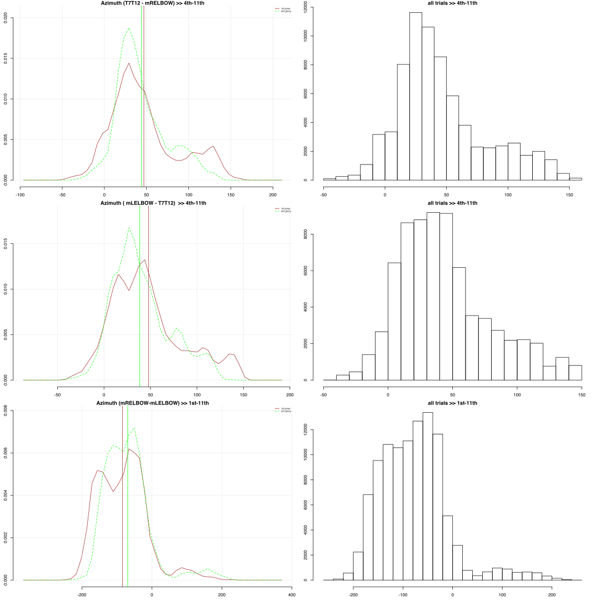
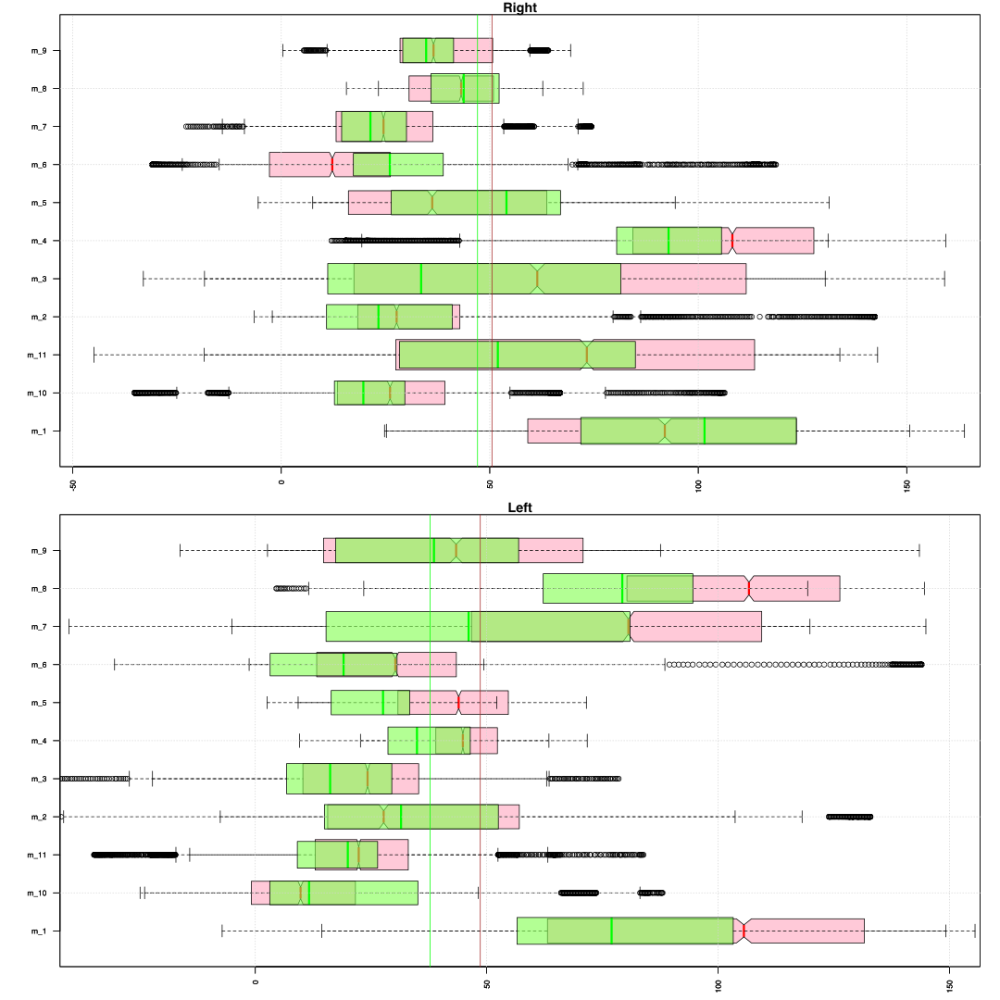
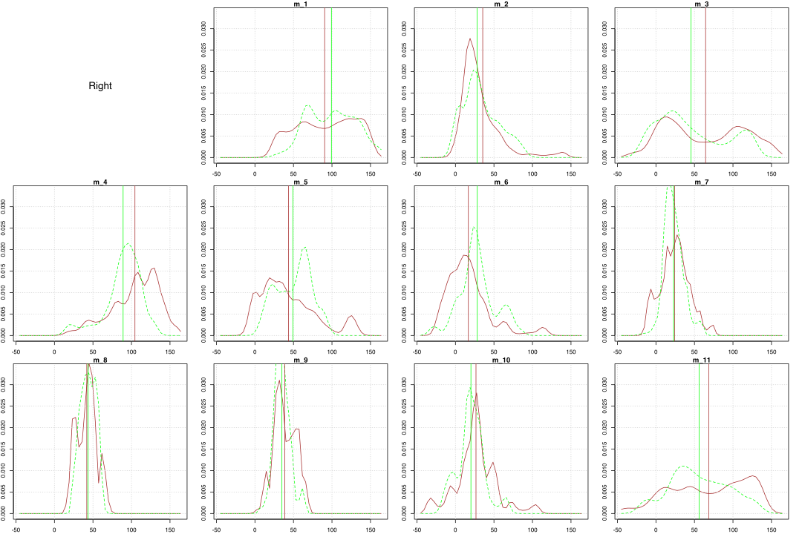
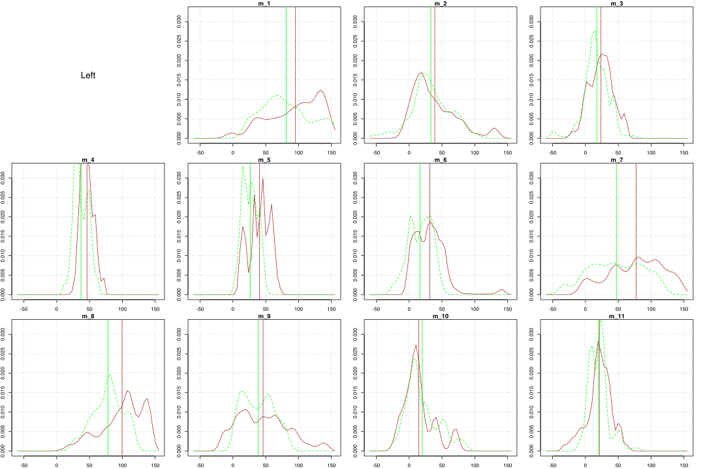
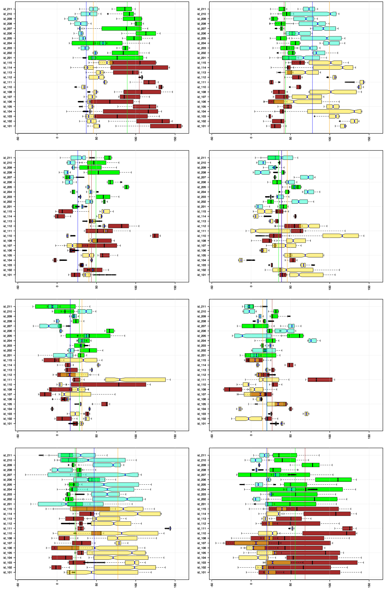

How the upper arms move relatively to the ribcage in the horisontal plane?
We need to look at upper arm representations that are given by two lines that connect marker bony parts of the shoulder joints (RSH and LSH) and mid elbow markers (mRELBOW and mLELBOW). These two lines (for right and left) reflect motion of the upper arms. Thus we can estimate their movement in horizontal plane relatively to the ribcage by looking at azimuth angles of these lines and the ribcage.
For the ribcage representation we take the spinal plane that represents the mid part of the ribcage (4th plane). This plane models a part between T7 to T12 vertebras, is perpendicular to the T12L4 line with the forward orientation that is defined by the bottom sternum marker. The azimuth angles are given by the forward points of the plane (sp4_1).
Summary. Relative orientation of the upper arms in the horisontal plane
The difference in azimuth angles (sp4_1-mRELBOW_1 and mLELBOW_1-sp4_1) are measured relatively to the forward direction of the 4th spinal plane and normalised to take positive values between 0 and 180 degrees. These values are angles from the right and left body upper arms to the mid centre on the right and left sides respectively. The 2nd step of the Short Form has 3 intervals with last two being identical motion sequence: one on the left and one on right side. In contrast the 1st interval involves a full body turn in space by 90 degrees leftwards and thus we don’t include this movement in the summary of the azimuth angles to simplify the matter.
For the azimuth angles in the 4th to 11 sub-movements we can see that the 1st group has a slightly higher mean value (around 3 degrees) than the 2nd group for the right upper arm and about 10 degrees higher for the left arm. It also seems that in the 1st group max values are about 25 degrees higher and this might indicate that in the position than the elbow is pointing to the sides and backwards the upper arm is much closer to the body in the 1st group than in the 2nd. Similarly the absolute minimum values in the 1st group are about 15 degrees higher and might indicate that in the positions than the arm crosses the midline of the body the upper arm is closer to the torso in the 1st group than in the 2nd.
Azimuth (T7T12 - mRELBOW) >> 2nd step SF, 4th - 11th sub-movements
| mean | sd | sem | n | NAs | max | min | |
|---|---|---|---|---|---|---|---|
| 1st group | 46.87 | 40.53 | 0.2004 | 40911 | 244 | 159.4 | -44.88 |
| 2nd group | 43.97 | 30.19 | 0.1712 | 31089 | 53 | 134 | -30.98 |
Azimuth ( mLELBOW - T7T12) >> 2nd step SF, 4th - 11th sub-movements
| mean | sd | sem | n | NAs | max | min | |
|---|---|---|---|---|---|---|---|
| 1st group | 48.05 | 38.72 | 0.1914 | 40911 | 244 | 144.9 | -34.83 |
| 2nd group | 38.43 | 31 | 0.1758 | 31089 | 53 | 119.8 | -40.25 |
Azimuth (mRELBOW - mLELBOW) >> 2nd step SF, 11 sub-movements
| mean | sd | sem | n | NAs | max | min | |
|---|---|---|---|---|---|---|---|
| 1st group | -83.87 | 69.7 | 0.2881 | 58527 | 0 | 238.1 | -243.9 |
| 2nd group | -69.03 | 67.31 | 0.3177 | 44872 | 0 | 248.1 | -236 |

Than data of the 4th to 11th sub-movements is grouped by trial identities we can notice that value ranges for left and right upper arms seem to be wider in the 1st group than in the 2nd. Also the 2nd group mean values for the left arm seem to be about 10 degrees smaller than in the 1st group and for the right arm in both groups. Than data is grouped by 11 sub-movements we can notice the lateral symmetry between 4th to 7th and 8th to 11th sub-movements. Boxplots for the right arm in the 1st interval are similar to boxplots for the left arm in the 2nd interval and vice versa; it also clearly shows that different sub-movements involve different amount of the movement in upper arms. Also this movement symmetry in 1st and 2nd intervals is clearly visible in the density plots.
However than data is grouped by two intervals we also can see that despite the symmetry in the movement all trials have slight differences between corresponding movements of the left and right arms in 2 intervals. For example ‘id_211’ the values ranges for the right upper arm in the 1st interval (green boxplot in the panel for the right side) are slightly wider and have about 7 degrees higher mean than values for the left arm in the 2nd interval (red boxplot in the panel for the left side). The symmetry and these deviations from it become even more visible in the 2 x 4 boxplots panel for 4 phases of the intervals. We also can notice the general trend: the right upper arms moves more than the left in the 1st phase and more or less in the 2nd phase of the 1st interval whereas the left upper arm moves more in the last phase of the 1st interval; the same logic applies for the 2nd interval (2nd column of the boxplots). Nonetheless different trials seem to have different strategies to distribute the movement between the left and right arms; e.g. ‘id_207’ in the 3rd phase displays more movement in the arm that goes down (left for the 1st interval, right for the 2nd) but ‘id_102’ displays a reversed logic. Also the clear preference for the more movement of the arm that goes down in the last phase of the intervals (left for the 1st interval, right for the 2nd) is different to the movement of the clavicles in the horizontal plane in the same phase as it displayed more movement in the shoulder of the arm that was reaching forwards.
The time series for the angles between the upper arms and midline of the body (the orientation of the ribcage) indicate the difference between the motion of the left and right arms within the same interval (light green vs. orange and dark green vs. red, e.g. ‘id_114’). However the left/right bias is present in most of the trials and we can see it in the 2nd plot panel at the hand of the differences between these left and right angles to the midline in the 1st and 2nd intervals (dark green vs. red lines); e.g. ‘id_114’ has negatively correlated lines symmetrical to the horizontal axis, ‘id_204’ has lines with similar shape for the same phases of the both intervals but the horizontal symmetry line is about 25 degrees. For the latter example if we look at the previous plot panel we can see that in the ‘id_204’ the left arm in the 2nd interval (red line) has a wider angle than the right arm in the 1st interval thus than we subtract the left values from the right (dark green minus light green and red minus orange) we get a higher result. In other words, this case describes a situation with the forward reaching arm being closer to the body midline in the horizontal plane then it is the right upper arm rather than the left arm. The example of an opposite case is ‘id_206’ with the reaching arm being closer to the midline than it is the left arm but also with the arm that moves downwards being closer to the midline than it is the right arm. Also these differences can be noticed at the hand of the angle between the both upper arms (mRELBOW-mLELBOW) that was calculated without any relation to the orientation of the ribcage (olive and pink lines). Depending on the spatial orientation of the arms this angle can indicate the angle from the forward or back directions with the values that are not easily interpretable in the movement terms; nonetheless they clearly mark the differences between the arm movements in the 1st and 2nd intervals across the trials. The 3rd plot panel shows the differences between the left and right angles to the midline in the 1st and 2nd intervals (dark green vs. red lines) together with the changes in the orientation of the ribcage (light grey lines for the 1st interval and dark grey for the 2nd).
Relative orientation of the upper arms in the horisontal plane, grouped by id-trials
Below are boxplots of the upper arm angles relative to the ribcage across different trials for the 4th to 11th sub-movements in the 2nd step of the Short Form. Brown color represents the 1st group and green the 2nd. Horizontal axes are given in degrees of the angles; the vertical axes represent grouping factor – identity of the trial.

Density plots of the angle values for the sub-movements of two symmetrical intervals (4th to 11th) grouped by the trial identities.
Brown color represents the right upper arm angles (T7T12 - mRELBOW) for the 1st group and light green the 2nd; vertical lines mark mean value of the corresponding trials. The orange color represents the left angles (T7T12 - mLELBOW) for the 1st group and dark green the 2nd; vertical lines mark mean value of the corresponding trials. Dark pink color represents the difference angle between the right and left (mRELBOW - mLELBOW).

Relative orientation of the upper arms in the horisontal plane, grouped by sub-movements
Also we can look at differences in the angles across the 11 sub-movements without differentiating between individual trials. The red color represents the 1st group and green the 2nd. Horizontal axes are given in degrees of the angles and the vertical axes represent grouping factor – a number of the sub-movement.

Azimuth (T7T12 - mRELBOW) >> 2nd step SF, 4th - 11th sub-movements
| mean | sd | sem | n | NAs | max | min | |
|---|---|---|---|---|---|---|---|
| 1st group | 45.67 | 28.54 | 10.09 | 8 | 0 | 104.5 | 16.79 |
| 2nd group | 43.11 | 22.52 | 7.961 | 8 | 0 | 89.17 | 20.12 |
Azimuth ( mLELBOW - T7T12) >> 2nd step SF, 4th - 11th sub-movements
| mean | sd | sem | n | NAs | max | min | |
|---|---|---|---|---|---|---|---|
| 1st group | 47.1 | 28.47 | 10.07 | 8 | 0 | 99.6 | 14.74 |
| 2nd group | 35.52 | 20.26 | 7.162 | 8 | 0 | 78.05 | 16.77 |
Azimuth (mRELBOW-mLELBOW) >> 2nd step SF, 4th - 11th sub-movements
| mean | sd | sem | n | NAs | max | min | |
|---|---|---|---|---|---|---|---|
| 1st group | -92.89 | 38.9 | 13.75 | 8 | 0 | -41.44 | -150.7 |
| 2nd group | -78.61 | 31.24 | 11.04 | 8 | 0 | -40.15 | -126.1 |
Density plots of the angle values grouped by the 11 sub-movements. Brown color represents the 1st group and green the 2nd; vertical lines mark mean value of the corresponding sub-movement for 1st and 2nd group. The 2nd and 3rd rows capture a symmetrical motion sequence: from the left into right bow stance and from the right into left.

Relative orientation of the upper arms in the horisontal plane, grouped by id-trials and sub-movements
Below are boxplots for two intervals of the 2nd step that capture symmetrical body motion: from the left to right bow stance and from the right to left bow stance. The boxplots of these intervals are superimposed for each of the trials. The 1st interval is marked by green color and the 2nd by red (color is not associated with groups).

Also, we can differentiate between the different sub-movements within the two intervals and look at them individually. Below are two columns of the boxplots with 4 rows that represent consecutive phases of our two intervals. The 1st column represents the movement from the left to right bow stance (4th - 7th sub-movements), the 2nd column represents the movement from the right to left bow stance (8th - 11th sub-movements).
Brown and green color mark data of the angles for the right upper arm in the 1st and 2nd group. Pale semi-transparent yellow and cyan-green colors mark angles of the left upper arm for the 1st and 2nd group.

Furthermore we can compare the actual time series for the two intervals. The figure below shows 25 plots for each of the trials with the red/orange color marking the 2nd interval and green the 1st. Vertical lines show boundaries for the four sub-movements within each interval.
Horizontal axis is given in frames with sampling frequency 120 frames per second.
Green colors are for the 1st interval (4-7th sub-movements; left to right bow stance) and red-like for the 2nd interval (8-11th sub-movements; right to left bow stance); darker colors are for the left upper arm and lighter colors for the right arm.
Right side (1-green & 2-orange), Left side (1-dark green & 2-red)

Below are the time series for the difference between the right and left upper arms (mRELBOW_1-mLELBOW_1+2*sp4_1) in relation to the ribcage; in other words these values represent the motion of the upper arms relative to the ribcage. Time series for the 1st interval are in the green color and for the 2nd interval in the red color. The positive value indicates that the right arm is closer to the body midline (more protracted) than the left. The lines in the light grey color represent azimuth angles of the ribcage in the 1st interval and in the dark grey in the 2nd. The olive and pink colors mark absolute angle between upper arms in the horisontal plane (mRELBOW-mLELBOW) for the 1st and 2nd intervals respectively.
(mRELBOW-mLELBOW) (1-olive & 2-dark pink), T7T12 (1-light grey, 2-dark grey)
(T7T12-mLELBOW)-(mRELBOW-T7T12) (1-dark green & 2-red)

T7T12 (1-light grey, 2-dark grey), (T7T12-mLELBOW)-(mRELBOW-T7T12) (1-dark green & 2-red)